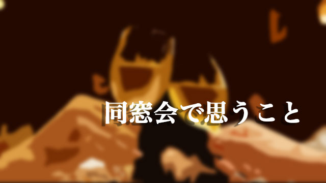

1
この歳になると同窓会のお知らせが舞いこむことが多くなります。既に仕事を退職したり色々な活動（社会の第一線）から引退する時期を迎え、人生の終着が近づくにつれ人は青春時代を懐かしむものかも知れません。
そういうわけで先日も久しぶりに高校時代の同級生の集りに出かけて来ました。
卒業以来初めて顔を合わせる者もいれば、時々連絡を取り合う仲間もいて互いの消息を確かめ合ったり昔話に花を咲かせたりとそれなりに賑わっていました。
で、やはり面白いのは昔「不良系」だった連中！ 不良系といっても様々で「あの先生の授業は（つまらないので）聞いても仕方がない」と特定の授業参加をボイコットしていた者。
「ベトナム戦争反対」のチラシを入学式の日に新入生に配布して停学になった者。
友人が街のチンピラグループに殴られた仕返しに、授業をサボってわざわざ彼らの溜り場に行って乱闘騒ぎを起こした者。
他にも一匹オオカミで教師や校則にあまり従わず独自路線を歩む者など多種多彩。
改めて彼らと話すと高校時代と何も変わっていない！
やはり強烈な個性を放ちながら「独自の世界」を歩んできた匂いがするのです。
さて、ここで特筆すべきは彼らは社会的規準でいうならけっこう「偉くなっている」ということ。一級建築士であったり司法書士であったり、会社経営者であったりとソコソコ成功している。中には警察署長を勤めた奴もいた！(笑)
逆につまらない(!?)のはマジメ系の連中。話してもちっとも面白くないという点では彼らも高校時代と変わっていない(笑)。マジメで大人しく勉強もソコソコできた連中はそれなりの（大手）会社で宮仕えをつとめていた者が多い。そして仕事の自慢なのか周囲をつかまえてお説教したり店のスタッフの若い女性にからんだり（セクハラ？）していました。
元不良はそんな元マジメ系を余裕の表情で見下ろしている。私的には何かとても面白い光景でした。
2
「じゃ、ワル（不良）だった奴らのほうが出世するのか!?」
「不良のほうが良いという話なのか」というならもちろん違います。
良い悪いの話ではない。
私のいう不良とは、先の例でも分かるようにいくつかの特徴というか基準があるのです。第1に押しつけられたルールにやみくもに従わない。
第2に自分独自のルールというか価値観をもっている。
第3に損得計算で行動しない。そして最後に仲間を大切にする･･･です。
自分なりの行動基準をもつことはきわめて大事なことだと思います。それは本当の意味でプライドの高さを示しているからです。
「自分軸」をもたない者は自信がないので、いったんコトが起こると軽挙妄動しやすい。
なのでますます「外側の規準」を頼ろうとする。
結果として大きく世界が開けないということです。
「損得で動かない」も大事。不良系は自分の内部に行動基準があるので目先の利益に左右されない傾向がある。これは「仲間を大切にする」にも通じることで、信頼している仲間が失敗したり困難なとき見捨てず助ける行為はときに危険を伴います。それでもあえて信頼し続けることで周囲からの支持を得ることが多い。
目先の利益より大局を見る姿勢ということです。
不良系の最大の特徴たる「ルールにやみくもに従わない」というのは、単に「押しつけ」を嫌っているからではなく、ルールの裏側にある本質を何となく直観しているからだと思います。「このルールは○○のために誰かがつくったものに過ぎない。」そう感じているので従うときもあれば従わないときもあるのです。
つまり何でもかんでも反抗するとか、ワガママを言うのではなくある意味ルールを超えているのです。
ルールを超えているからこそ、独自のルールを生み出せる。それはつまり自分独自の世界を創造できるということです。
こう考えると彼ら不良系が出世したり成功しているのは当り前な気がします。
不良、ワル、ルール破り！ これらは親の皆さんー特にお母さんたちーが忌み嫌うものです。
しかし先生や親などなど周囲の大人たちにとっての良い子が、必ずしも社会で活躍する人物とは限りません。それは大人にとって都合の良い子であって本人たちの幸せとは関係がないのです。
私たちは知らずしらずの内に、自分たち（大人）をわずらわせない、言うなりになるような子を育ててしまっていないでしょうか。
不良（ハミ出す者）こそ社会で成功する
少し語弊がありますが、マジメすぎる世の大人たちに上の言葉を贈りたいと思います。